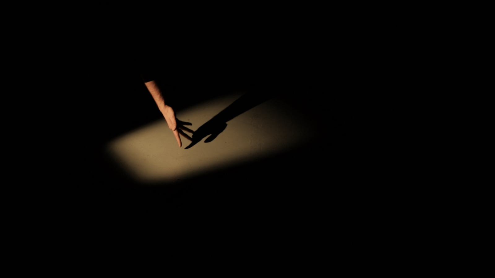

(Réalisation)
Trois mondes, un parapluie
Du document de réalisation au mixage.
-
Un aller-retour dans l'œil
Le film tient en trois temps : 30 à 40 secondes au parc, 4 minutes en studio, puis 30 à 45 secondes de retour au parc. Le passage se fait par un zoom dans l'œil du personnage, où l'on aperçoit déjà le premier plan du studio, puis un dézoom pour en ressortir.


-
Couleur, silhouette, chaos
Chaque plan en studio a un rôle. La couleur, c'est son monde intérieur et ce qu'il veut atteindre. La silhouette, c'est le monde réel qui s'infiltre lentement pour le ramener à la réalité. Le chaos, ce sont les deux mondes qui se battent.


-
Lasers, lumières et projections
On a tourné avec des lasers, des barres lumineuses et des DEL, devant des fonds projetés : un fond complètement blanc ou des ombres d'arbres. Pour chaque moment, on captait un plan d'ensemble, un gros plan, un plan large et un très gros plan, en plus de plans de texture, en plongée et au point de vue du personnage.


-
Du rêve au noir et blanc
L'étalonnage suit le parcours : un extérieur jaune-vert, onirique, au début ; un mélange de noir et blanc et de pastels en studio ; et un retour au parc entièrement en noir et blanc.
-
Une trame qui change de peau
La musique suit les émotions du personnage : un début onirique, un premier drop électronique pour les moments heureux, un retour au calme, un drop triste, un drop de combat où les deux mondes s'affrontent, puis une finale drum and bass. Je l'ai composée dans FL Studio et spatialisée sur huit haut-parleurs avec Spat Revolution. Voici la version binaurale. À écouter avec des écouteurs.
À écouter avec des écouteurs